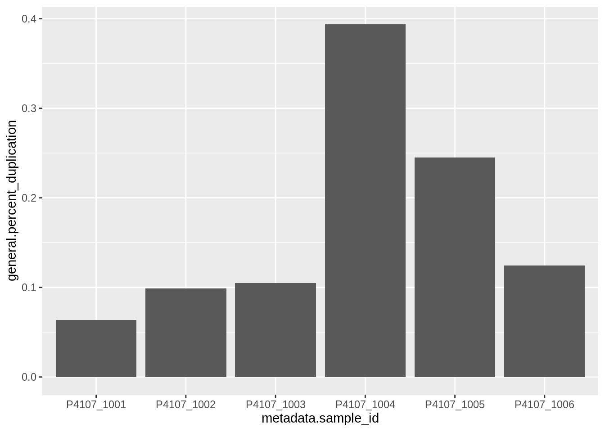

In this example we’ll be using the WGS example report used in the MultiQC documentation. You can find view the report in your browser here, and find the associated multiqc_data.json file here. Feel free to download this file and use it to follow along with this vignette.
In the rest of the vignette we will use the multiqc_data_path variable to indicate the path to this multiqc_data.json file. Feel free to set this variable to the path to this file on your system.
First, install the package using:
install.packages("TidyMultiqc")Then if you want, you can load the package:
However, for the sake of this tutorial we will explicitly use namespaced functions, so we won’t be using library a great deal.
The main entry point to the TidyMultiqc package is the function load_multiqc. A basic invocation of this function looks like this:
(note the arrow for scrolling through columns)
df = TidyMultiqc::load_multiqc(multiqc_data_path)
df
#> # A tibble: 6 × 165
#> metadata.sam…¹ gener…² gener…³ gener…⁴ gener…⁵ gener…⁶ gener…⁷ gener…⁸ gener…⁹
#> <chr> <dbl> <dbl> <dbl> <int> <int> <dbl> <dbl> <dbl>
#> 1 P4107_1003 8.68e8 8.48e8 97.6 40 365 41.4 92.3 92.2
#> 2 P4107_1004 1.00e9 9.85e8 98.2 46 363 41.0 92.3 92.2
#> 3 P4107_1005 9.75e8 9.56e8 98.0 45 368 41.2 92.3 92.2
#> 4 P4107_1002 8.66e8 8.47e8 97.8 40 367 41.3 92.3 92.2
#> 5 P4107_1006 9.12e8 8.95e8 98.1 43 362 41.3 92.3 92.2
#> 6 P4107_1001 7.72e8 7.51e8 97.3 36 358 41.4 92.3 92.2
#> # … with 156 more variables: general.10_x_pc <dbl>, general.30_x_pc <dbl>,
#> # general.50_x_pc <dbl>, general.genome <chr>,
#> # general.number_of_variants_before_filter <dbl>,
#> # general.number_of_known_variants_brie_non_empty_id <dbl>,
#> # general.number_of_known_variants_brie_non_empty_id_percent <dbl>,
#> # general.number_of_effects <dbl>, general.genome_total_length <dbl>,
#> # general.genome_effective_length <dbl>, general.change_rate <dbl>, …We’ve now generated a tibble (a kind of data frame), whose rows are samples in the QC report, and whose columns are QC data and metadata about these samples.
By default this function only returns the “general” statistics, which are the ones in the “General Statistics” table at the top of the MultiQC report. In TidyMultiqc, these statistics are all prefixed by general. We can also extract the “raw” statistics, which includes some fields normally hidden from the report. These statistics will have the prefix raw.<toolname>. where <toolname> is the QC tool used to calculate it.
TidyMultiqc::load_multiqc(multiqc_data_path, sections = 'raw')
#> # A tibble: 6 × 224
#> metadata.sam…¹ raw.q…² raw.q…³ raw.q…⁴ raw.q…⁵ raw.q…⁶ raw.q…⁷ raw.q…⁸ raw.q…⁹
#> <chr> <chr> <dbl> <dbl> <dbl> <dbl> <dbl> <dbl> <dbl>
#> 1 P4107_1003 /scrat… 8.68e8 8.48e8 1.25e11 1.25e11 28161. 363 50.3
#> 2 P4107_1004 /scrat… 1.00e9 9.85e8 1.46e11 1.46e11 28253. 361 50.4
#> 3 P4107_1005 /scrat… 9.75e8 9.56e8 1.41e11 1.41e11 30723. 365 50.3
#> 4 P4107_1002 /scrat… 8.66e8 8.47e8 1.25e11 1.25e11 29317. 364 50.3
#> 5 P4107_1006 /scrat… 9.12e8 8.95e8 1.32e11 1.32e11 30869. 360 50.3
#> 6 P4107_1001 /scrat… 7.72e8 7.51e8 1.11e11 1.11e11 28932. 355 50.3
#> # … with 215 more variables:
#> # raw.qualimap_bamqc_genome_results.mean_coverage <dbl>,
#> # raw.qualimap_bamqc_genome_results.percentage_aligned <dbl>,
#> # raw.snpeff.genome <chr>, raw.snpeff.number_of_variants_before_filter <dbl>,
#> # raw.snpeff.empty_id <dbl>, raw.snpeff.empty_id_percent <dbl>,
#> # raw.snpeff.number_of_effects <dbl>, raw.snpeff.genome_total_length <dbl>,
#> # raw.snpeff.genome_effective_length <dbl>, raw.snpeff.change_rate <dbl>, …Often you won’t care about fields like raw.qualimap_bamqc_genome_results.bam_file, the path to the original BAM file, but ‘raw’ at least provides this option.
You can also combine both general and raw sections by passing in a longer vector:
df_both = TidyMultiqc::load_multiqc(multiqc_data_path, sections = c('raw', 'general'))
ncol(df_both)
#> [1] 388That’s a lot of columns!
This section will briefly talk about some downstream use-cases for this package.
One use for this data frame is creating QC plots. For example, to visualise the duplication rate per sample:
library(magrittr)
df %>%
ggplot2::ggplot(ggplot2::aes(x=metadata.sample_id, y=general.percent_duplication)) +
ggplot2::geom_col()
Of course, this is basically just replicating a plot already in the MultiQC report, but now we can customise it how we like!
With all this data, we might also want to test a specific hypothesis! For example, we might want to test the hypothesis that the mean GC content is the same as the mean GC content in the human genome (41%). If we assume that GC content is normally distributed, we can do the following:
t.test(df$general.percent_gc, mu=41)
#>
#> One Sample t-test
#>
#> data: df$general.percent_gc
#> t = -1, df = 5, p-value = 0.3632
#> alternative hypothesis: true mean is not equal to 41
#> 95 percent confidence interval:
#> 40.40490 41.26176
#> sample estimates:
#> mean of x
#> 40.83333It seems that we cannot reject this hypothesis, so these may well be human samples!
It may be the case that your samples have important metadata that you want in your data frame. For example, it is common for the sample names or file names to be composed of a number of metadata fields, and indeed the report we are working with has IDs such as P4107_1003, which is composed of two identifiers.
To include this metadata in our output, we need to provide the find_metadata argument to load_multiqc, which is a function that is called for each sample, and which returns a named vector of metadata fields for that sample. It also gets passed the entire parsed MultiQC JSON report, so the function can traverse the structure as it wants to extract metadata.
Here is an example that parses the input file names to annotate additional metadata. Notice that the first argument our function is passed is a string which is the sample identifier for a sample, and how in this example we ignore the parsed argument. Also notice that the names we give to our return value (“batch” and “sample”) are prefixed by “metadata” to become the final names in the data frame.
TidyMultiqc::load_multiqc(
multiqc_data_path,
find_metadata = function(sample, parsed) {
# Split the sample ID to obtain some metadata
segments <- stringr::str_split(sample, "_")[[1]]
c(
batch = segments[[1]],
sample = segments[[2]]
)
}
)
#> # A tibble: 6 × 167
#> metadata.sam…¹ metad…² metad…³ gener…⁴ gener…⁵ gener…⁶ gener…⁷ gener…⁸ gener…⁹
#> <chr> <chr> <chr> <dbl> <dbl> <dbl> <int> <int> <dbl>
#> 1 P4107_1003 P4107 1003 8.68e8 8.48e8 97.6 40 365 41.4
#> 2 P4107_1004 P4107 1004 1.00e9 9.85e8 98.2 46 363 41.0
#> 3 P4107_1005 P4107 1005 9.75e8 9.56e8 98.0 45 368 41.2
#> 4 P4107_1002 P4107 1002 8.66e8 8.47e8 97.8 40 367 41.3
#> 5 P4107_1006 P4107 1006 9.12e8 8.95e8 98.1 43 362 41.3
#> 6 P4107_1001 P4107 1001 7.72e8 7.51e8 97.3 36 358 41.4
#> # … with 158 more variables: general.1_x_pc <dbl>, general.5_x_pc <dbl>,
#> # general.10_x_pc <dbl>, general.30_x_pc <dbl>, general.50_x_pc <dbl>,
#> # general.genome <chr>, general.number_of_variants_before_filter <dbl>,
#> # general.number_of_known_variants_brie_non_empty_id <dbl>,
#> # general.number_of_known_variants_brie_non_empty_id_percent <dbl>,
#> # general.number_of_effects <dbl>, general.genome_total_length <dbl>,
#> # general.genome_effective_length <dbl>, general.change_rate <dbl>, …We can extend this approach, but this time actually look up the file paths within the report_data_sources section of the MultiQC report:
TidyMultiqc::load_multiqc(
multiqc_data_path,
find_metadata = function(sample, parsed) {
# This gives us the path to the fastqc output file
filepath = parsed$report_data_sources$FastQC$all_sections[[sample]]
# Split into path segments
path_segments = stringr::str_split(filepath, "/")[[1]]
# The filename is the last path segment
filename = dplyr::last(path_segments)
# Split the filename using dots and underscores
name_segments = stringr::str_split(filename, "[_\\.]")[[1]]
# Arbitrarily assign names for the outputs
name_segments %>% purrr::set_names(LETTERS[1:length(name_segments)])
}
)
#> # A tibble: 6 × 173
#> metadata.sam…¹ metad…² metad…³ metad…⁴ metad…⁵ metad…⁶ metad…⁷ metad…⁸ metad…⁹
#> <chr> <chr> <chr> <chr> <chr> <chr> <chr> <chr> <chr>
#> 1 P4107_1003 P4107 1003 S3 L004 R1 001 fastqc zip
#> 2 P4107_1004 P4107 1004 S4 L005 R1 001 fastqc zip
#> 3 P4107_1005 P4107 1005 S5 L006 R2 001 fastqc zip
#> 4 P4107_1002 P4107 1002 S2 L003 R2 001 fastqc zip
#> 5 P4107_1006 P4107 1006 S6 L007 R2 001 fastqc zip
#> 6 P4107_1001 P4107 1001 S1 L002 R2 001 fastqc zip
#> # … with 164 more variables: general.total_reads <dbl>,
#> # general.mapped_reads <dbl>, general.percentage_aligned <dbl>,
#> # general.median_coverage <int>, general.median_insert_size <int>,
#> # general.avg_gc <dbl>, general.1_x_pc <dbl>, general.5_x_pc <dbl>,
#> # general.10_x_pc <dbl>, general.30_x_pc <dbl>, general.50_x_pc <dbl>,
#> # general.genome <chr>, general.number_of_variants_before_filter <dbl>,
#> # general.number_of_known_variants_brie_non_empty_id <dbl>, …Of course in a real application we would choose specific names for each field.
Finally, we might want to include metadata that doesn’t relate to the sample at all. For example, MultiQC has a number of report fields prefixed by config_ that we might want to store:
TidyMultiqc::load_multiqc(
multiqc_data_path,
find_metadata = function(sample, parsed) {
parsed[c(
"config_creation_date",
"config_version"
)]
}
)
#> # A tibble: 6 × 167
#> metadata.sam…¹ metad…² metad…³ gener…⁴ gener…⁵ gener…⁶ gener…⁷ gener…⁸ gener…⁹
#> <chr> <chr> <chr> <dbl> <dbl> <dbl> <int> <int> <dbl>
#> 1 P4107_1003 2021-0… 1.10 8.68e8 8.48e8 97.6 40 365 41.4
#> 2 P4107_1004 2021-0… 1.10 1.00e9 9.85e8 98.2 46 363 41.0
#> 3 P4107_1005 2021-0… 1.10 9.75e8 9.56e8 98.0 45 368 41.2
#> 4 P4107_1002 2021-0… 1.10 8.66e8 8.47e8 97.8 40 367 41.3
#> 5 P4107_1006 2021-0… 1.10 9.12e8 8.95e8 98.1 43 362 41.3
#> 6 P4107_1001 2021-0… 1.10 7.72e8 7.51e8 97.3 36 358 41.4
#> # … with 158 more variables: general.1_x_pc <dbl>, general.5_x_pc <dbl>,
#> # general.10_x_pc <dbl>, general.30_x_pc <dbl>, general.50_x_pc <dbl>,
#> # general.genome <chr>, general.number_of_variants_before_filter <dbl>,
#> # general.number_of_known_variants_brie_non_empty_id <dbl>,
#> # general.number_of_known_variants_brie_non_empty_id_percent <dbl>,
#> # general.number_of_effects <dbl>, general.genome_total_length <dbl>,
#> # general.genome_effective_length <dbl>, general.change_rate <dbl>, …It is occasionally useful to extract QC data from the MultiQC plots. For example, let’s say we want to calculate the median quality score of every base in each sample. Unfortunately, MultiQC provides no numerical summary statistic for the read quality, it only has mapping quality and pass/fails for the per-base sequence quality:
df_both %>% dplyr::select(dplyr::contains('quality'))
#> # A tibble: 6 × 5
#> raw.qualimap_bamqc_genome_results.mean_mappi…¹ raw.f…² raw.f…³ raw.f…⁴ raw.f…⁵
#> <dbl> <dbl> <chr> <chr> <chr>
#> 1 50.3 0 pass warn pass
#> 2 50.4 0 pass fail pass
#> 3 50.3 0 pass warn pass
#> 4 50.3 0 pass fail pass
#> 5 50.3 0 pass warn pass
#> 6 50.3 0 pass warn pass
#> # … with abbreviated variable names
#> # ¹raw.qualimap_bamqc_genome_results.mean_mapping_quality,
#> # ²raw.fastqc.sequences_flagged_as_poor_quality,
#> # ³raw.fastqc.per_base_sequence_quality,
#> # ⁴raw.fastqc.per_tile_sequence_quality,
#> # ⁵raw.fastqc.per_sequence_quality_scoresHowever, our MultiQC report does have plots that contain this information. In particular, let’s look at the “Per Sequence Quality Scores” plot.
Firstly, we need the ID of the plot we want. This isn’t necessarily obvious from just looking at the report, so we can use a utility function here:
TidyMultiqc::list_plots(multiqc_data_path)#> # A tibble: 20 × 2
#> id title
#> <chr> <chr>
#> 1 qualimap_coverage_histogram Qualimap BamQC: Coverage histogram
#> 2 qualimap_genome_fraction Qualimap BamQC: Genome fraction cove…
#> 3 qualimap_insert_size Qualimap BamQC: Insert size histogram
#> 4 qualimap_gc_content Qualimap BamQC: GC content distribut…
#> 5 snpeff_variant_effects_region SnpEff: Counts by Genomic Region
#> 6 snpeff_variant_effects_impact SnpEff: Counts by Effects Impact
#> 7 snpeff_effects SnpEff: Counts by Effect Types
#> 8 snpeff_variant_effects_class SnpEff: Counts by Functional Class
#> 9 snpeff_qualities SnpEff: Qualities
#> 10 gatk_varianteval_variant_plot GATK VariantEval: Variant Counts
#> 11 picard_deduplication Picard: Deduplication Stats
#> 12 fastqc_sequence_counts_plot FastQC: Sequence Counts
#> 13 fastqc_per_base_sequence_quality_plot FastQC: Mean Quality Scores
#> 14 fastqc_per_sequence_quality_scores_plot FastQC: Per Sequence Quality Scores
#> 15 fastqc_per_sequence_gc_content_plot FastQC: Per Sequence GC Content
#> 16 fastqc_per_base_n_content_plot FastQC: Per Base N Content
#> 17 fastqc_sequence_duplication_levels_plot FastQC: Sequence Duplication Levels
#> 18 fastqc_overrepresented_sequencesi_plot FastQC: Overrepresented sequences
#> 19 fastqc_adapter_content_plot FastQC: Adapter Content
#> 20 fastqc-status-check-heatmap FastQC: Status ChecksNow, we know we want the “Per Sequence Quality Scores” plot, and by looking at the data frame above we can tell that the corresponding ID is fastqc_per_sequence_quality_scores_plot.
Now that we have the plot ID, we can load the plot data. First, we need to tell TidyMultiqc to load include some plots by using sections = "plot" (you can load other sections at the same time, as explained above). Also, we need to pass the plot ID from the previous step into the plots argument:
df = TidyMultiqc::load_multiqc(
multiqc_data_path,
sections = 'plot',
plots = "fastqc_per_sequence_quality_scores_plot"
)
df
#> # A tibble: 6 × 2
#> metadata.sample_id plot.fastqc_per_sequence_quality_scores_plot
#> <chr> <list>
#> 1 P4107_1001 <tibble [35 × 2]>
#> 2 P4107_1002 <tibble [38 × 2]>
#> 3 P4107_1003 <tibble [31 × 2]>
#> 4 P4107_1004 <tibble [32 × 2]>
#> 5 P4107_1005 <tibble [40 × 2]>
#> 6 P4107_1006 <tibble [40 × 2]>We now have the plot data, but it’s not in a very usable form! This is because each sample has an entire data frame of plot data. At this point if you’re comfortable using dplyr and tidyr to deal with nested data frames, you probably know what to do. Otherwise, read on.
Recall that we are after the median quality score of each sample. First, we should look at the plot data for a single sample to know what we’re dealing with:
df$plot.fastqc_per_sequence_quality_scores_plot[[1]]
#> # A tibble: 35 × 2
#> x y
#> <dbl> <dbl>
#> 1 7 2
#> 2 8 13
#> 3 9 121
#> 4 10 702
#> 5 11 3962
#> 6 12 11946
#> 7 13 33566
#> 8 14 77653
#> 9 15 157422
#> 10 16 294209
#> # … with 25 more rowsSo each data frame is a set of x, y pairs. As it’s a histogram plot, we know that the x value is the quality score, and y is the number of times that score has been counted.
One possible way to process this nested data is to use tidyr:
df %>%
tidyr::unnest(cols = plot.fastqc_per_sequence_quality_scores_plot)
#> # A tibble: 216 × 3
#> metadata.sample_id x y
#> <chr> <dbl> <dbl>
#> 1 P4107_1001 7 2
#> 2 P4107_1001 8 13
#> 3 P4107_1001 9 121
#> 4 P4107_1001 10 702
#> 5 P4107_1001 11 3962
#> 6 P4107_1001 12 11946
#> 7 P4107_1001 13 33566
#> 8 P4107_1001 14 77653
#> 9 P4107_1001 15 157422
#> 10 P4107_1001 16 294209
#> # … with 206 more rowsAs you can see, if we unnest in this way, we now have multiple rows for the same sample, which is a bit confusing (and not Tidy). However, if we use group_by and then summarise, this can be a useful way to calculate summary statistics. For example, if we want the total number of reads, we could do the following:
df %>%
tidyr::unnest(cols = plot.fastqc_per_sequence_quality_scores_plot) %>%
dplyr::group_by(metadata.sample_id) %>%
dplyr::summarise(total_reads = sum(y))
#> # A tibble: 6 × 2
#> metadata.sample_id total_reads
#> <chr> <dbl>
#> 1 P4107_1001 383592756
#> 2 P4107_1002 430185524
#> 3 P4107_1003 431379000
#> 4 P4107_1004 498165399
#> 5 P4107_1005 484233426
#> 6 P4107_1006 453238610Although unnesting worked well in this example, it can get a bit awkward for more complex operations. In these cases we can use purrr. Refer to the next section for an example that compares both approaches. The below example sums the number of reads for each sample, as we have done above, but this time it uses purrr::map_dbl to map over the list of data frames:
df %>%
dplyr::mutate(
total_reads = purrr::map_dbl(plot.fastqc_per_sequence_quality_scores_plot, ~sum(.$y)),
plot.fastqc_per_sequence_quality_scores_plot = NULL
)
#> # A tibble: 6 × 2
#> metadata.sample_id total_reads
#> <chr> <dbl>
#> 1 P4107_1001 383592756
#> 2 P4107_1002 430185524
#> 3 P4107_1003 431379000
#> 4 P4107_1004 498165399
#> 5 P4107_1005 484233426
#> 6 P4107_1006 453238610Of course, we actually want to find the median here, which is a bit harder. Luckily there exists a package called HistDat for generating summary statistics from histogram-type data. You can check out the package’s manual and vignettes here, but in brief, we want to convert each of these plot data frames into a HistDat object, which we can do using the same strategies as before. Then, using HistDat, we can calculate our summary statistics in one of the two ways mentioned above.
Using the tidyr approach, we can unnest the plot data, group it, create a HistDat object for each group, and then produce new columns using the new hist column:
df %>%
tidyr::unnest(cols = plot.fastqc_per_sequence_quality_scores_plot) %>%
dplyr::group_by(metadata.sample_id) %>%
dplyr::mutate(hist = list(HistDat::HistDat(vals = x, counts = y)), .keep = "unused") %>%
dplyr::mutate(
mean_coverage = hist %>% dplyr::first() %>% mean(),
median_coverage = hist %>% dplyr::first() %>% median(),
max_coverage = hist %>% dplyr::first() %>% max(),
hist= NULL
) %>%
dplyr::slice(1)
#> # A tibble: 6 × 4
#> # Groups: metadata.sample_id [6]
#> metadata.sample_id mean_coverage median_coverage max_coverage
#> <chr> <dbl> <dbl> <dbl>
#> 1 P4107_1001 37.4 40 41
#> 2 P4107_1002 37.9 40 41
#> 3 P4107_1003 39.4 41 41
#> 4 P4107_1004 40.0 41 41
#> 5 P4107_1005 38.3 40 41
#> 6 P4107_1006 37.6 40 41Alternatively, using the purrr method, we can just map each plot data frame into a row of summary statistics. Much neater!
df %>%
dplyr::mutate(
purrr::map_dfr(plot.fastqc_per_sequence_quality_scores_plot, function(plot_df){
hist = HistDat::HistDat(vals=plot_df$x, counts = plot_df$y)
list(
mean_coverage = mean(hist),
median_coverage = median(hist),
max_coverage = max(hist)
)
}),
plot.fastqc_per_sequence_quality_scores_plot = NULL
)
#> # A tibble: 6 × 4
#> metadata.sample_id mean_coverage median_coverage max_coverage
#> <chr> <dbl> <dbl> <dbl>
#> 1 P4107_1001 37.4 40 41
#> 2 P4107_1002 37.9 40 41
#> 3 P4107_1003 39.4 41 41
#> 4 P4107_1004 40.0 41 41
#> 5 P4107_1005 38.3 40 41
#> 6 P4107_1006 37.6 40 41So far, we have used TidyMultiqc’s built-in parsers. Each parser is a function that converts the plot JSON into a list of data frames. However, it is possible that we might encounter a new type of plot that is not yet implemented in TidyMultiqc. If this happens, the first thing you should do is file an issue against this package.
Then, if you’re daring, you can try to implement a parser. For your reference, you can refer to the existing parsers in the source code. Then, you can pass in your custom parser using the plot_parsers argument to load_multiqc:
TidyMultiqc::load_multiqc(
multiqc_data_path,
sections = 'plot',
plots = "fastqc_per_sequence_quality_scores_plot",
plot_parsers = list(
# This fake parser function takes a plot and just returns the iris dataset
xy_line = function(plot_data, name){
list(
sample_1 = list(
plot_name = list(iris)
)
)
}
)
)
#> # A tibble: 1 × 2
#> metadata.sample_id plot_name
#> <chr> <list>
#> 1 sample_1 <df [150 × 5]>Finally, if your parser works, please submit a pull request to TidyMultiqc to share this with everyone!
Using the strategies and patterns explained in this section, you should be in good stead to handle whatever plots MultiQC throws at you.